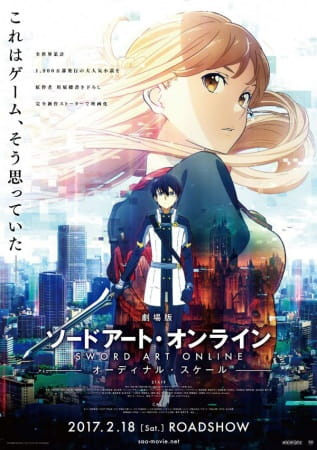

Sword Art Online Movie: Ordinal Scale

| Japanese |
: 劇場版 ソードアート・オンライン -オーディナル・スケール- |
| English |
: Sword Art Online the Movie -Ordinal Scale |
| Episodes |
: 1 |
| Score |
: 7.58 |
| Type |
: Movie |
| Rilis |
: 18 Februari 2017 |
| Genre |
: Action, Adventure, Fantasy |
| Studio |
: A-1 Pictures |
| Author |
: Reki Kawahara |
Sinopsis : Pada tahun 2026, empat tahun setelah insiden Sword Art Online yang terkenal, bentuk teknologi baru yang revolusioner telah muncul: Augma, perangkat yang menggunakan sistem Augmented Reality. Tidak seperti Realitas Virtual NerveGear dan Amusphere, ini sangat aman dan memungkinkan pemain untuk menggunakannya saat mereka sadar, menciptakan hit instan di pasar. Aplikasi paling populer untuk Augma adalah game Ordinal Scale, yang membenamkan pemain dalam game role-playing fantasi dengan peringkat dan hadiah pemain. Mengikuti kegilaan baru, teman-teman Kirito terjun ke dalam permainan, dan terlepas dari keraguannya tentang sistem, Kirito akhirnya bergabung dengan mereka. Meskipun pada awalnya tampaknya hanya kesenangan dan permainan, mereka segera mengetahui bahwa permainan itu tidak seperti yang terlihat...
Plot : Pada tahun 2026, Augma dirilis ke publik sebagai sistem alternatif untuk AmuSphere, karena ia memproyeksikan lapisan permainan di atas kenyataan saat pemain sadar, daripada menggunakan FullDive. Game berbasis pertarungan yang paling menonjol adalah Ordinal Scale, di mana kemampuan pemain diurutkan berdasarkan nomor urut.
Asuna, Lisbeth dan Silica mendorong Kirito untuk memainkan OS setelah mendengar bahwa bos Aincrad telah muncul. Kirito bergabung dengan Asuna dan Klein dalam pertarungan bos melawan Kagachi sang Samurai Lord di Akihabara, di mana maskot permainan, penyanyi idola AI Yuna, muncul dan memberikan efek buff kepada pemain saat dia bernyanyi. Kirito gagal mencapai apa pun karena kurangnya kekuatan fisik dan kelincahan dunia nyata. Eiji, pemain peringkat dua, membantu grup dalam mengalahkan bos. Sebelum Asuna melakukan pukulan mematikan, Eiji membisikkan kata "Switch," mekanik game dari SAO yang dia kenal.
Malam berikutnya, Asuna bergabung dengan Klein dan kelompoknya untuk pertarungan bos lain di Taman Yoyogi sambil menunggu anggota kelompok terakhir mereka, tidak menyadari bahwa dia telah dilukai oleh Eiji malam sebelumnya. Asuna meninggalkan Klein dan guildnya dan melanjutkan ke pertarungan melawan Storm Griffin, yang lagi-lagi dipimpin oleh Yuna. Klein dan guildnya dikejutkan oleh kemunculan tiba-tiba dari bos kedua, Zanghi the Flame Caller, dan secara mengejutkan didukung oleh Eiji, yang secara fisik menyerang dan mengalahkan Klein dan seluruh guildnya di dunia nyata menggunakan refleks superior dan kekuatan yang tampaknya manusia super. Ketika Asuna kembali ke tempat dia meninggalkan mereka, Klein dan guildnya tidak terlihat. Keesokan paginya, saat Kirito berlatih dengan OS di Taman Yoyogi, seorang gadis yang tidak dikenalnya muncul dengan tudung putih, mengucapkan sesuatu tanpa berkata-kata dan menunjuk ke kejauhan sebelum menghilang. Kirito yang bingung dikejutkan oleh Asuna yang datang untuk makan siang bersamanya. Saat makan bersama, Asuna berteori bahwa Eiji adalah mantan anggota Knights of the Blood Oath bernama Nautilus, sementara Yui menyimpulkan bahwa lokasi spawn bos Aincrad sejajar dengan peta dungeon SAO. Menyadari ketidakhadiran Klein, Kirito mencoba untuk memeriksanya.
Asuna, Lisbeth, dan Silica bergabung dalam pertarungan bos melawan Strict Hermit di Yebisu Garden Place, tempat Yuna dan Eiji muncul lagi. Pada saat yang sama, Agil menghubungi Kirito dan mengatakan kepadanya bahwa Klein telah dirawat di rumah sakit dengan lengan yang patah; Kirito, khawatir, bergegas untuk melindungi Asuna dan teman-teman mereka. Selama pertempuran bos, bos kedua, Dorz'l the Chaos Drake, tiba-tiba muncul dan terpaku pada Silica. Eiji memblokir pelarian Silica dengan mendorongnya ke jalur serangan bos yang mematikan, dan Asuna dikalahkan sambil melindunginya; sebuah bola oranye muncul dari Asuna dan dengan cepat dikumpulkan oleh salah satu drone OS. Setelah pertempuran, Asuna mulai menderita kehilangan ingatan, dan pergi ke rumah sakit untuk pemeriksaan.
Asuna mengetahui bahwa perangkat Augma memindai otaknya secara khusus untuk ingatan SAO dan bahwa kehilangan ingatan dapat memburuk. Setelah kondisi Asuna memburuk, Kirito memperoleh tekad yang kuat untuk memecahkan misteri tersebut. Kirito mengunjungi Klein di rumah sakit dan memastikan bahwa ingatan SAO Klein juga hilang. Kirito pergi ke pertempuran bos Dire Tusk di Tokyo Dome City mencari Eiji, di mana dia bergabung dengan Sinon; meskipun dia mengkhawatirkan keselamatannya, Sinon mengingatkan Kirito bahwa dia bukanlah seorang yang selamat dari SAO. Selama pertempuran bos, seorang penyintas SAO dikalahkan dan Kirito menyaksikan bola memori bercahaya dikumpulkan oleh drone OS. Yui mencoba mengambil bola memori dari drone tetapi gagal setelah diblokir oleh sistem OS. Setelah pertempuran, Kirito frustrasi karena Eiji tidak muncul, tetapi bertemu dengan gadis berkerudung untuk ketiga kalinya, yang mengulangi tindakannya sebelumnya. Kirito dan Yui mengetahui bahwa dia menunjuk ke Universitas Teknik Touto.
Kirito pergi ke universitas dan bertemu Profesor Tetsuhiro Shigemura, yang mengembangkan Augma. Shigemura menolak untuk menjawab pertanyaan apa pun. Sebelum pergi, Kirito melihat di meja Shigemura gambar seorang gadis yang mirip Yuna. Kirito berbicara dengan Seijirō Kikuoka, yang memberitahu dia bahwa putri Shigemura, Yuna, meninggal di SAO. Kirito memperingatkan Kikuoka bahwa hilangnya memori mungkin mempengaruhi penyintas SAO lain yang bermain OS. Mengunjungi rumah Asuna, Kirito berjanji pada Asuna bahwa dia akan mendapatkan ingatannya kembali. Saat mencari petunjuk, Kirito bertemu lagi dengan gadis berkerudung, yang dia konfirmasi adalah Yuna. Ketika dia mengatakan kepadanya bahwa peringkatnya terlalu rendah, Kirito memutuskan untuk menaikkan level hardcore, dengan ceroboh melakukan rantai solo sebanyak mungkin bos, dan meningkatkan pedang AR-nya dengan bantuan dari Leafa.
Beberapa hari kemudian, para pemain OS berkumpul di Stadion Nasional Tokyo untuk konser langsung pertama Yuna. Di level bawah, Kirito berduel dengan Eiji, yang mengklaim bahwa dia memiliki cara untuk mengembalikan ingatan Asuna. Setelah Kirito mengalahkannya, Eiji mengungkapkan bahwa Shigemura telah mengumpulkan ingatan para pemain SAO dalam upaya untuk merekonstruksi jiwa putrinya yang hilang dan membangkitkannya sebagai AI; membuat para penyintas SAO terkonsentrasi di satu tempat adalah tahap akhir dari rencana tersebut dan Eiji yakin dia telah menang. Kirito bergegas kembali ke atas untuk memperingatkan semua orang, memanggil Kikuoka di jalan. Kikuoka memperingatkan Kirito bahwa semua drone pemanen memori yang memindai semua orang sekaligus dapat merusak otak pemain, membunuh mereka seperti yang dilakukan NerveGear di SAO.
Saat gerombolan bos Aincrad muncul dan meneror stadion, Kirito dan Yuna bergabung dalam pertempuran. Yuna memberi tahu Kirito bahwa Augma memiliki fitur full-dive tersembunyi dan dia dapat menggunakannya untuk mengalahkan bos lantai 100 SAO untuk menghentikan pemindaian dan menyelamatkan semua orang. Sebelum menyelam, Kirito memberikan Asuna sebuah cincin pertunangan. Memasuki Istana Ruby Lantai 100, Kirito, Lisbeth, Silica, Agil, dan Sinon menghadapi bos. Mereka dengan mudah kewalahan sampai Asuna, Leafa, Klein, dan beberapa pemain mengesankan lainnya dari ALO dan GGO datang membantu mereka. Yui memulihkan kemampuan mereka yang tersimpan dari SAO, memungkinkan semua orang untuk mengalahkan bos. Suara Akihiko Kayaba mengucapkan selamat kepada mereka atas kemenangan mereka dan memberikan Kirito pedang yang sangat kuat sebagai hadiah.
Kelompok itu kembali ke arena masih dalam penyelaman penuh di mana Kirito, sekarang pemain peringkat atas OS, dengan mudah mengirim bos dengan pedang barunya. Sementara itu, di dunia nyata, Kikuoka menemukan Shigemura di ruang server yang ditinggalkan Argus (perusahaan mati yang pernah menjalankan SAO) dan menangkapnya. Yuna yang berkerudung mengembalikan ingatan para penyintas dan menghilang dari keberadaannya karena keberadaannya terikat dengan bos Lantai 100. Setelah itu, Kirito dan Asuna memenuhi janji yang mereka buat satu sama lain di Aincrad, untuk menonton hujan meteor bersama. Asuna mengembalikan cincin janji Kirito sehingga dia bisa meletakkannya dengan benar di tangannya kali ini, yang dia lakukan.